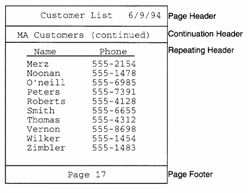
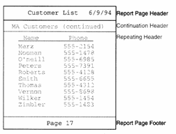
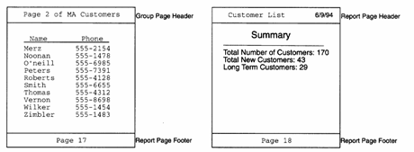
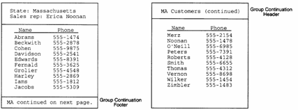
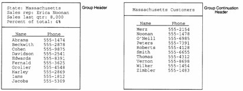
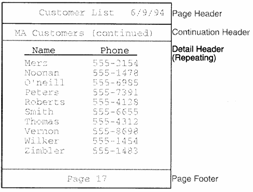

Headers and Footers
A new report automatically has a Report Header and a Page Footer.
If your printed report does not fit on one page, you can use special headers and footers. Special headers and footers are layout regions that print at the top and bottom of pages as Page breaks occur. You typically use them to display the page number, reprint column titles, or tell readers that the section is continued on the next page:

There are three types of special headers and footers:
Page headers and footers : These are the first and last layout regions to appear on a page, respectively. Page headers and footers can be defined for the entire report, for a particular section, for a particular layout region, or at a combination of levels. For more information refer, to Page Headers and Footers later in this section.
Continuation headers and footers : These layout regions appear just below the page header and just above the page footer, respectively. Continuation headers and footers often contain text such as "Continued From Previous Page". as with page headers and footers, continuation headers and footers can be defined at different levels. For more information, refer to Continuation Headers and Footers later in this section.
Repeating group headers and footers : These are group header and footer layout regions which have been set to repeat each time a page break occurs. Often these layout regions are used to reprint column labels, or the group name for the records on the page. For more information, refer to Repeating Group Headers and Footers.
Page headers and footers can be created for the entire report, for specific grouping levels, for the Detail section, and for individual layout regions. Page headers and footers are replaceable, meaning no matter how many you define, only one page header and one page footer will appear on any given page. When a Report is printed, Alpha Anywhere follows these rules to determine which page header and page footer to print:
|
Header/Footer Type |
Function |
|
Edit Region Header |
Prints if the edit region is the first on the page. Replaces any other page header you have created. |
|
Edit Region Footer |
Prints if the edit region is the last on the page. Replaces any other page footer you have created. |
|
Detail Header |
Prints only if the Detail Header, or Detail Edit Region is the first edit region on the page. |
|
Detail Footer |
Prints only if the Detail Footer, or Detail Edit Region is the last edit region on the page. |
|
Group Header |
Prints only if the Group Header or Group Footer is the first edit region on the page. |
|
Group Footer |
Prints only if the Group Header or Group Footer is the last edit region on the page. |
|
Report Header |
Prints on every page, but can be replaced by any other page header/footer. |
|
Report Footer |
Creating a Report Header or Footer
To create a page header or footer for the report as a whole, a group, or a detail section:
Select Report > Report Properties, Report > Group Properties, or Report > Detail Properties.
When the dialog box appears, display the Header/Footer tab.
Check the Has Page Header or Has Page Footer check boxes.
Creating an Edit Region Header or Footer
To create a page header or footer for a particular edit region:
Select Report > Region Properties.
In the Regions dialog box, choose the appropriate edit region.
When the Region Properties dialog box appears, display the Header/Footer tab.
Check the Has Page Header or Has Page Footer check boxes.
Examples of Page Headers and Footers
By defining the page header or footer in the Report section, you can create a page header or footer that prints on every page:

The report section's page header and footer is usually all you need. However, in some cases you might want to create a substitute page header or footer that appears when a specific section prints. For example, you have a report that groups customers by state, and each group can span several pages. You can create a page header for the Group ?State' section to print the page number for the current group:

Details on how to print page numbers for a group can be found in the section Inserting Page Numbers and Inserting Today's Date later in this chapter.
Suppose instead, you only want to use the report page header and report page footer. The first page of your report contains the Report Header edit region which you use as a cover page by inserting a page break. Because the first page is a cover page, you do not want the report's page header and footer to print. To stop them from printing, you can define a page header and footer for the Report Header edit region, but leave the Report Header edit region's page header and page footer blank. When the report prints, Alpha Five substitutes the blank page header and footer for the Report section's page header and footer that you created for the Report Header edit region.
Continuation Headers and Footers
When the information in your report does not fit on one page, you can use a continuation header or footer to indicate to your readers that the report has been continued onto another page. Continuation footers appear at the bottom of the page, above the page footer, and usually contain text such as "Continued on the Next Page." Continuation headers appear at the top of the page, below the page header, and usually contain text such as "Continued From the Previous Page."

Continuation headers and footers can be defined for the entire Report, for a section of the Report, or for an edit region in the Report. Unlike page headers and footers, continuation headers and footers are not replaceable, meaning it is possible to have multiple continuation headers and footers on a page.
Alpha Five follows these rules to determine which continuation header and continuation footers print:
|
Continuation Type |
Function |
| Edit Region Header | Prints only if the edit region has been split and continues from the previous page. |
| Edit Region Footer | Prints only if the edit region is split onto the next page. |
| Detail Section Header | Prints on every page, except when the previous page printed every edit region in the Detail Section, without splitting an edit region onto the current page. |
| Detail Section Footer | Prints on every page, except pages on which every edit region in the Detail Section can be printed without being split onto another page. |
| Group Section Header | Prints on every page, except pages on which the group footer was the last edit region to print on the previous page, and the group header did not need to be split onto the current page. If there is no group footer section, it functions the same as the continuation header for the Detail section. |
| Group Section Footer | Prints on every page, except pages on which the group footer is the last edit region to print on the page, and the edit region did not need to be split onto the current page. If there is not a group footer, the group's continuation footers functions the same as the continuation footer for the Detail section. |
| Report Section Header | Prints on every page of a multi-page Report, except the first page. |
| Report Section Footer | Prints on every page of a multi-page Report, except the last page. |
To create a continuation header or footer for the Report, the Detail section, or a group, select Report > Report Properties, Report > Detail Properties, or Report > Group Properties. When the Properties dialog box appears, click the Header/Footer tab and check the Has Continuation Header or Has Continuation Footer check boxes.
To create a continuation header or footer for an edit region, select Report > Region Properties. In the Regions dialog box, choose the appropriate edit region. When the Region Properties dialog box appears, click the Header/Footer tab and check the Has Continuation Header or Has Continuation Footer check boxes.
Examples of a Continuation Header and Footer
For example, an edit region of your report is used to print delivery notes about your vendors. On pages where the edit region does not fit onto the page, you can use continuation headers and footers to tell readers that the record has been split:

You can also use continuation headers to print an abridged version of a section header. For example, you have a customer list that groups customers by state. Before each group of customers, a group header prints statistics about the state. While you can set the group header to repeat on every page, you might, instead, want to print a shorter version of the group header. To do this, you use the group's continuation header:

Repeating Group Headers and Footers
You can set a group header so that it reprints on pages where records are carried over from the previous page. This is especially helpful if you use the header to display column titles:

You can also set group footers to repeat on the bottom of each page.
Creating a Repeating Group Header or Footer
To make a group header or footer repeat:
Select Report > Group Properties.
In the Group dialog box, select the appropriate group.
When the Group Properties dialog box appears, display the Header/Footer tab.
Check the Repeats at page/group break check box in either the Headers area or Footers area.
See Also